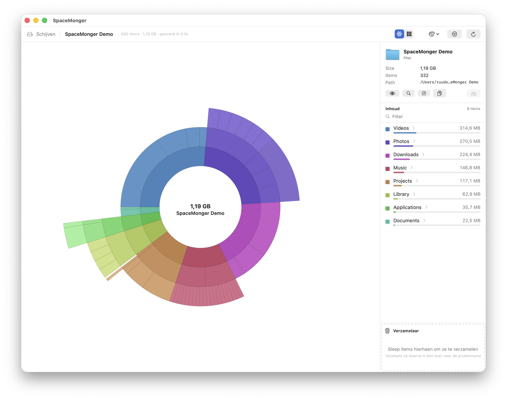
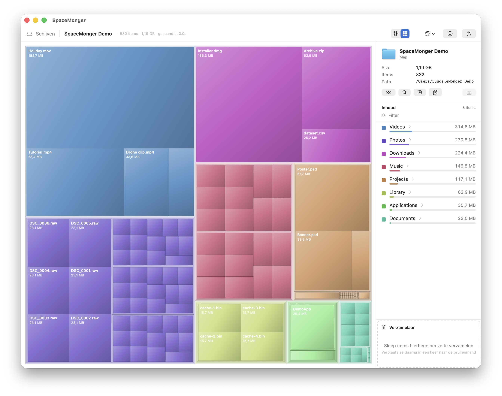

Find it. Free it.
See exactly what's filling your Mac's disk as an interactive sunburst or treemap, and reclaim the space — quickly and safely.


Everything you need to clean up your disk
🌅 Sunburst & treemap
Two interactive maps. Zoom in/out, hover for details, colour by folder, file type or depth.
⚡ Fast, concurrent scans
Multi-core measurement of real on-disk sizes, with live progress and cancel.
🗑️ The Collector
Drag files in, then move them all to the Trash at once. Safety stoppers protect system files.
🔒 System & hidden space
Full Disk Access flow, administrator scan, and local snapshot / purgeable cleanup.
🎯 Focus & filters
Highlight files by name, type or size. Exclude patterns like node_modules.
💾 Save & compare
Save scans, re-open them (incl. .gpscan), and diff two scans.
👁️ Quick Look & Open With
Preview with Space, reveal in Finder, copy path, open in any app.
🌍 15 languages
English, Nederlands, Deutsch, Français, 日本語, 简体中文 and more.
🛡️ Private by design
Reads only file metadata — names & sizes. Nothing leaves your Mac. No analytics.
Ready to reclaim some space?
Free, open source, and notarized for macOS.
Download for macOSRequires macOS 13 Ventura or newer. If the app is opened the first time and macOS warns it's from an unidentified developer, right-click the app ▸ Open.